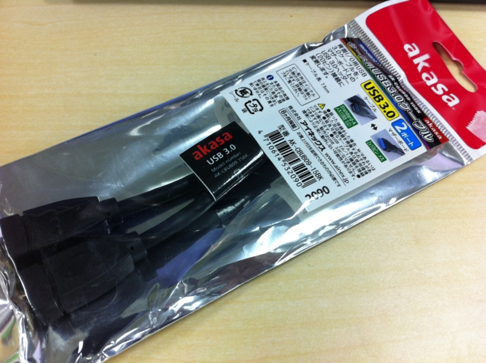
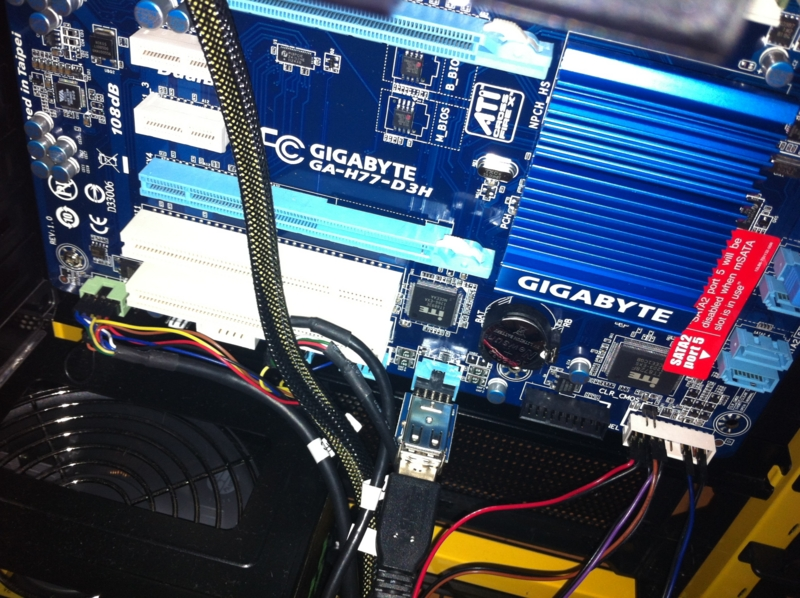

ケーブル、焼きうどん、サッカー。
公開日：
風邪で死にかけたので Amazon で体温計を買った - だるろぐ で Amazon のお急ぎ便（“Amazon プライム”っていうのかな？）をお試ししているのだけど、そのせいで小物を細切れに注文するようになった。なんせ送料を気にしなくていいし。配送が速いことにはあまり魅力を感じないけれど、ほしいものをほしいときに頼めるのは精神的にとてもよろしい。ただ、お値段に見合うことなのかはまだ判断がつきかねるけど。

たとえば、今回はマザーボードのUSB 3.0ピンヘッダをメスコネクタに変換するケーブルを買った。

AINEX ケース用USB3.0ケーブル AK-CBUB09-15BK
- 出版社/メーカー: AINEX
- 発売日: 2011/09/15
- メディア: 付属品
- 購入: 1人 クリック: 5回
- この商品を含むブログを見る
……が、買ってからマザーボードにはUSB 3.0のピンヘッダがないことに気が付いたので、USB 2.0の似たようなものを購入した。

世田谷電器 USB9pinポート変換 奥沢一丁目 AR-UPIPO-A
- 出版社/メーカー: エアリア
- メディア: Personal Computers
- 購入: 6人 クリック: 38回
- この商品を含むブログ (1件) を見る
せいぜい500円の、しかも小さな基盤なのに、箱はやたらでかいので、部屋に段ボールがたまっていくのが困る。地球にも厳しいし、あんまり調子にのって使うのもよくないなぁーといった感じ。

まぁ、このおかげでPCケースの前面にあったUSBポートがすべて使えるようになったのでうれしい。間違って使えないポートに iPhone 刺していたがために充電ができていなかった、なんて事故も減るだろう。
昨日はそんなこんなで、あとは焼うどん作って日本代表のサッカー観て、すぐ寝た。あんまりいい試合でもなかったけど、やっぱり香川は上手いなー。俺の作った焼うどんより上手い。あと、酒井のクロスはいい武器になる。長友とフュージョンしてくれれば最強なのだけどなぁ。